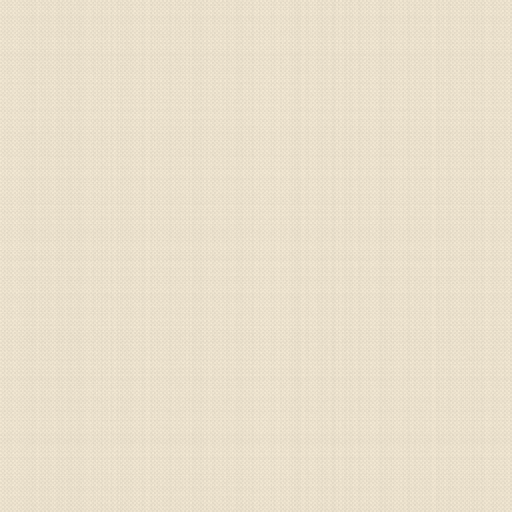
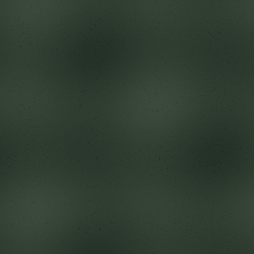

DAWN OF KIN · UI-0 R2 · OPERAÇÃO IDENTIDADE
Direção 3 — Tear de Trama e Semente
Cerâmica esmaltada fosca, linho cru tramado, cordão de sementes, Ninho Familiar sobreposto e Roseta Botânica de 4 estações.
100% Arte Autoral · Validado na Godot 4.7.2 (Custom _draw + CLIP_CHILDREN)
720p & 1080p · Intel UHD Graphics 620
720p & 1080p · Intel UHD Graphics 620
Linho Cru Tramado + Cerâmica Musgo


Zero metal medieval clichê: celebra a natureza vibrante, o acolhimento familiar e o crescimento orgânico das gerações.
Paleta & Contraste (WCAG AA/AAA)
Linho Cru
#EFE6D4
Cerâmica Musgo
#2E3D30
Terracota
#AE5736
Broto
#6B9650
Hierarquia Tipográfica & Informação
DAWN OF KIN · Linhagem Viva
Origem · União · Descoberta · Construção · Continuidade
Contadores tabulares: Madeira 24 · Pedra 14 · Alimentos 18 · 42% · 4,0 m/s
Iconografia Exclusiva
wood
stone
food
build
tasks
lineage
Botões & Estados Interativos
Normal
Hover
Terracota
Inativo
Evolução Visual com a Civilização (Linguagem Futura)
Nível I · Acampamento
Cordão simples de fibra e sementes
Cordão simples de fibra e sementes
Nível III · Povoado
Cerâmica esmaltada e pontos bordados
Cerâmica esmaltada e pontos bordados
Nível V · Vila
Tapeçaria completa da comunidade
Tapeçaria completa da comunidade
Tratamento dos Fundadores & Emblema

Alden


Brena
Componente Exclusivo & Miniaturas
Roseta de 4 Pétalas + Ninho Familiar: as estações acendem pétalas cerâmicas distintas, enquanto o Ninho de discos sobrepostos brota folhas reais conforme os filhos nascem.